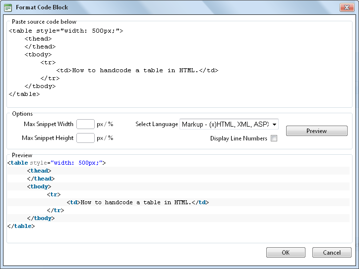
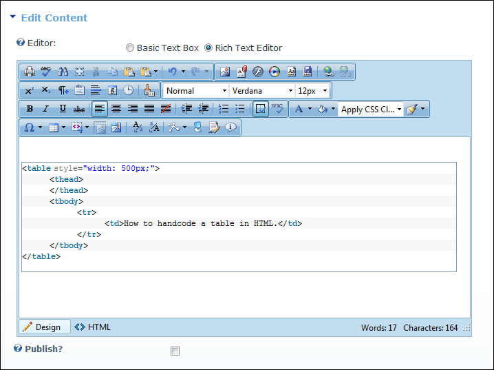

Formatting Code Block
How to insert a code block in the TelerikEditorProvider RTE.
- Place your cursor where you want to place the code block.
- Click the Format Code Block
 button. This opens the Format Code Block window.
button. This opens the Format Code Block window.
- In the Paste Source Code Below text box, paste the source code.
- In the Options section complete the following:
- Optional. In the Max Snippet Width text box, set the maximum width of the code block in either pixels or as a percentage. Do this by either typing a value into the text box or by using the Increase
 and Decrease
and Decrease  buttons. The value will automatically be saved as pixels unless you enter the percentage symbol (%) into the text box. E.g. Enter 100px or 100 to set the width as 100 pixels, or enter 100% to set the width as 100%. Leave blank for no specified width.
buttons. The value will automatically be saved as pixels unless you enter the percentage symbol (%) into the text box. E.g. Enter 100px or 100 to set the width as 100 pixels, or enter 100% to set the width as 100%. Leave blank for no specified width.
- Optional. In the Max Snippet Height text box, set the maximum height of the code block in either pixels or as a percentage. Leave blank for no specified width.
- At Select Language, select the language of the code block from these options: Markup - (x)HTML, XML, ASPX, ..."; Javascript, CSS, C#, CPP, VB, Php, SQL, Delphi, or Python.
- At Display Line Numbers, to display line numbers for each line of code - OR - to disable numbering.

- Optional. Click the Preview button to preview the code in the Preview window below.

- Click the OK button to insert the code block.